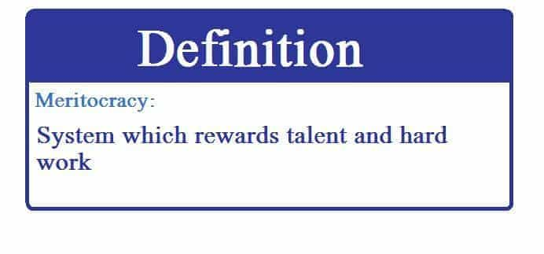

Luke Stranahan is an engineer by trade and an armed patriot by inclination. He writes for Return of Kings as a leisure pursuit and an attempt to do his part to help reverse the slide into moral decrepitude of modern society. Follow him on Twitter.


“Those who can, do; those who can’t, teach.” Originally attributed to George Bernard Shaw, this maxim has hung around for a hundred years in various forms (my brother likes to append “and those who can’t teach, teach PE” to it) and it does a good job of describing the working man’s disdain for academia. However, it is now more true than ever as we head into the Trump presidency due to the political split between Marxist academics and capitalist titans of industry.
Today we will talk about some of Trump’s cabinet picks, and what their educational level may or may not have to do with predicting their performance.
New York Daily News writer and “activist” Shaun King recently wrote an article starting with a review of Ta-Nehisi Coates’ book “My President Was Black” and, after the required virtue signaling of institutionalized racism still being a thing, segued over to bashing Trump’s cabinet picks for being white and not educated to a level he would prefer. It’s an OK read that we can obtain a few salient points from to start a discussion.
We are leaving two terms of the first black President in the USA, but, somehow, that’s not enough for some people, like Coates, who think that he faced undue hurdles due to his race. I wholeheartedly believe that Obama was helped by his race, as black Americans got behind him and voted in large numbers. Hillary, on the other hand, tried to marshal the women’s vote, but a large amount of women made the call “yes, we need a woman President, but, no, not her”.
The narrative from the black left has progressed from “if you don’t vote for Obama, you’re racist” to “you don’t like the job Obama is doing because you’re racist” and finally to “if you don’t think Trump cheated his way into the White House because he’s a white man, you’re racist.”

To be President, you need to be at least 35, not a felon, a native born American, and win the election (and 8th grade Civics class is thataway for the leftists who refuse to understand the Electoral College.) Race, gender, or creed has nothing to do with it. Trump won the election just as fairly as Obama did, and one could speculate that Obama had an advantage due to his Senate career over Trump being an outsider.
I am surprised that black America is not yet distancing themselves from Obama, as he is arguably the worst President of modern times. One way to do that would be to denounce him as “not black enough,” being biracial, but I don’t think Mr. King will be leading that charge as he is in the same boat and it would trash his street cred. I do think that “Remember the last one?” will be shutting down any discussion of a future black President for at least a generation, however, it is just as wrong to vote against someone for their race as it is to vote for them because of it.
King moves on to discuss Trump’s cabinet picks, their race, and their education level. He seems to consider being white a detriment to their suitability for their position, which is, on its face, a racist statement which only gets a pass as it is against whites. He then negates Dr. Ben Carson, who is black, a doctor, highly accomplished, and arguably brilliant by saying he had to accomplish all that to get a spot on the cabinet to offset his “blackness.”
Before we go on, it’s nice to finally see someone on the left acknowledge Dr. Carson’s race, as he is universally discounted by them for not fitting their definition of black which is “someone of African heritage who votes Democrat.” However, it’s tiring to assume that everything is racially motivated. I presume that Dr. Carson is on the Cabinet because he is a capable person who can do his assigned job and has a conservative political outlook.
This is what brings us to what may actually be King’s problem. I don’t believe he actually cares about the education level of Trump’s cabinet; he cares about the political leanings of the appointees, and he can make his objection more palatable if he calls it “education level,” as there is a marked difference between the politics of academia and industry resulting in a progressively (pun somewhat intended) leftist shift the longer you stay in academia before leaving for industry (if you do actually leave.)
As Reagan said, “the trouble with our liberal friends is not that they’re ignorant, it’s just that they know so much that isn’t so.” The election of Trump, with a large bolstering of the Republican control of both sides of Congress, lots of Republican victories in governors’ elections, and tons of state level Congressional victories as well points to a rejection of Obama and all things left by the majority of states. Of course a leftist is not going to like the cabinet picks, but trying to hang it on race and educational level is stupid.
Allow me to explain. There exists a certain phenomenon when one either cannot find the career they want, or does not really want a career outside education of “going to school forever.” People accrue degrees that sound impressive, but may not be needed, or even apply, to whatever they end up doing. I hold a Master of Science degree in my field, but I do not use it in my current career. I went to graduate school as the jobs available at that time and place were a little lacking, and I found my current career afterwards. Do I need the degree? Not now, but I am glad I have it. Does it make me a better engineer? Sure, but there are my equals (and betters) who do not possess one.
One needs to evaluate real world performance in a given field over educational level. Do I want you to read Mr. King’s article? Yes, I do. Do I want you to read mine before jumping to our always-enticing comments section? Yes, that as well. However, do I want you to take my article as better and of a higher level than Mr. King’s because I possess a graduate degree and he only holds an undergraduate degree? No, and that is my point, but, by Mr. King’s logic, that would be acceptable instead of evaluating each piece on merit.
Trump seems to be taking a businessman’s approach to government, and, in doing so, he hearkens back to the original idea of American politics in which an accomplished man would step away from his endeavors for a few terms as a public servant in a governmental position to represent his people. He would lend his expertise from his experiences in commerce or the military or whatever his field might be, help steer the nation as his civic duty, then return to his labors once done.

I’m not interested in right versus left, I doubt Trump and his people are either, and I think that is why he does not fit the classic conservative ideological mold. I am far more interested in right versus wrong, and, while morality is indeed important, I refer to the right way versus the wrong way of doing things, by which I mean it is totally results oriented.
Obama’s government has been a failure, and I could write an entire article, listing by line item, each failure that occurs to me, but, suffice to say that much needs to be fixed, and I care about that a whole lot more than I care about the race or the educational level of Trump’s cabinet. To attack someone based on their demographics smacks of an ad hominem logical fallacy as well.
At this point, I can look back on Obama’s Presidency and condemn it for him being black, or being a lawyer, or I could evaluate it on its merits (or lack thereof) and judge it fairly. Trump has yet to take office, so, while I understand the left’s attacks being race and level of education based at this time (as they really have nothing else to go on at the moment), I would bet that the party of “tolerance and respect” will continue with character assassination instead of critiquing performance of Trump’s administration in the future because, even if he’s a great President, to them, he (and his people) will always be bad men and women.
Read More: Donald Trump Is The Candidate For Americans, Not Special Interests